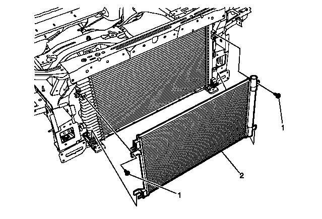
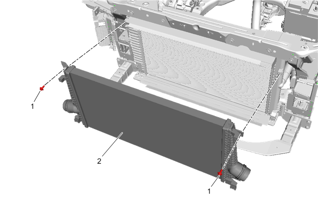
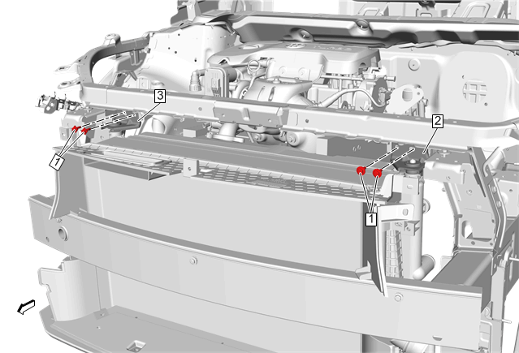
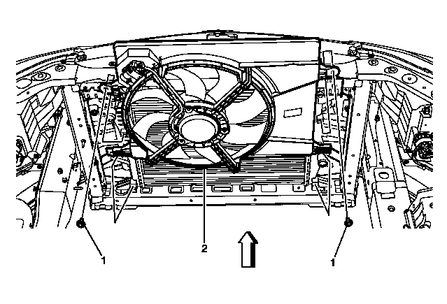
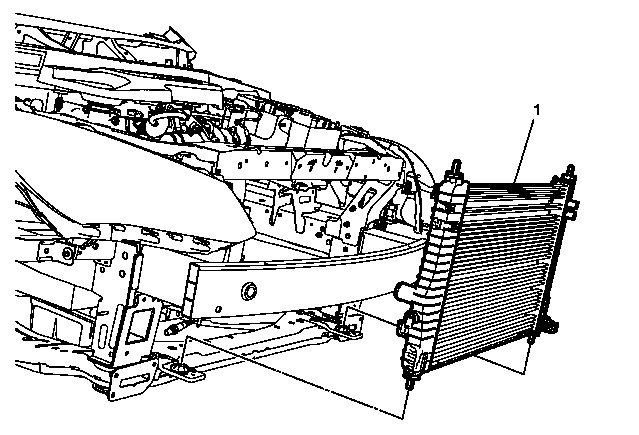

散热器的更换
拆卸程序
- 1.断开蓄电池负极电缆。蓄电池负极电缆的断开和连接
- 2.排空冷却液系统。冷却系统的排放和加注
-
3.散热器进口软管（2）@散热器»拆下 –散热器进口软管的更换

-
4.散热器出口软管（2）@散热器»拆下 –散热器出口软管的更换

-
5.空调冷凝器（2）»拆下 –空调冷凝器的更换
-
6.增压空气冷却器（2）»拆下 –增压空气冷却器的更换
-
7.散热器上托架（2，3）»拆下 –散热器上托架的更换
-
8.发动机冷却液风扇螺栓（1）@发动机冷却液风扇（2）»拆下 [2x]
- 9.发动机冷却液风扇（2）@散热器»拆下
-
10.散热器（1）@车辆»拆下
安装程序
- 1.散热器（1）@车辆»安装
- 2.发动机冷却液风扇（2）@散热器»安装
-
3.发动机冷却液风扇螺栓（1）@发动机冷却液风扇（2）»安装并紧固 [2x]5 N•m(44 lb in)告诫：有关紧固件的告诫
- 4.散热器上托架（2，3）»安装 –散热器上托架的更换
- 5.增压空气冷却器（2）»安装 –增压空气冷却器的更换
- 6.空调冷凝器（2）»安装 –空调冷凝器的更换
-
7.散热器出口软管（2）@散热器»安装 –散热器出口软管的更换
-
8.散热器进口软管（2）@散热器»安装 –散热器进口软管的更换
- 9.加注冷却液系统。冷却系统的排放和加注
- 10.连接蓄电池负极电缆。蓄电池负极电缆的断开和连接